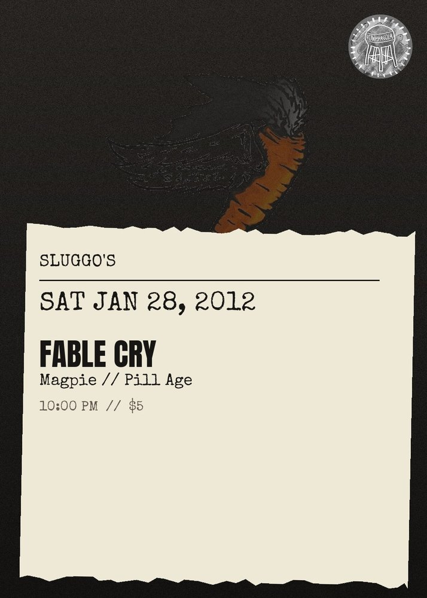

SAT JAN 28from the archive
Fable Cry, Magpie, Pill Age
10:00 PM
cover was $5
FABLE CRY (NASHVILLE folk) MAGPIE (DENVER folk) PILL AGE (PCOLA punk) : last show ever! come out and say yer good-byes to joe pro. $5 Show starts @10pm.
punk, metal & diy shows in pensacola, fl

FABLE CRY (NASHVILLE folk) MAGPIE (DENVER folk) PILL AGE (PCOLA punk) : last show ever! come out and say yer good-byes to joe pro. $5 Show starts @10pm.